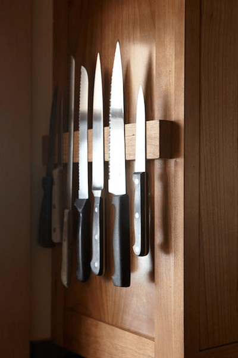
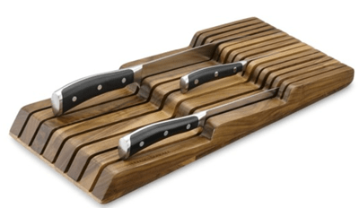
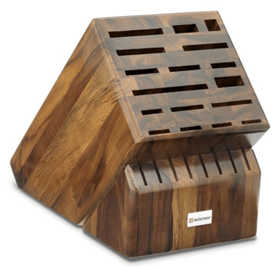
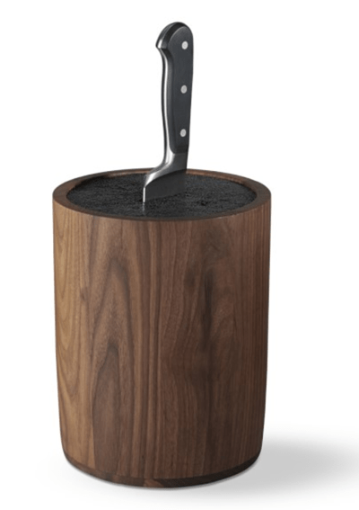

#6 – How to Store Your Knives
To preserve the quality of a knife and our fingertips, we need to start off with some proper storage ideas. I will be sharing many different ways that you can store your “investments.” It will be up to you to decide which works best, with consideration of your family and kitchen space.
I am going to jump right into it… First off it’s a good idea to keep the knives within reach of your food prep area. This will cut down on time and reduce the number of times that you are jetting around the kitchen with a knife in hand. How many times has a child, dog, or husband, rushed into the kitchen for some love or a snack and they catch you off guard?
Magnetic Strip (wall or drawer)

Magnetic strips are wonderful if you have the proper vertical spacing or if your kitchen is suffering from “little-counter-space” syndrome.
The key when properly using your magnetic knife strip is to return the knife, laying the blunt edge down first. If you place the sharp edge down first you, you risk dulling the blade over time. The same goes for when removing the knife… pull the blade away from the strip and then lift off.
Magnetic strips can also make a decor statement. Nothing says, “I am the Gordon Ramsey of raw food” than a display of chef knives. Go ahead, be proud! They are extensions of your fingers!
Wherever you decide to place the magnetic strips, be sure it’s safe and inaccessible to children, but easy to reach when you need to use them.
These strips can be attached to the wall, behind the stove, on the side of a kitchen cabinet, or even flat in a drawer. This is what we do. But this only works if the drawer fully extends out. You never want to reach for a knife in a dark area. We don’t have kids either, so we don’t have to worry about little ones getting into these places.
Do Not place the magnetic strips inside of a cabinet door. If you open or close the door too quickly, the knives could fall off!
Do Not place the magnetic strips underneath the cabinets, above your counters. They could fall if you grab or place them there in haste and you could cut yourself blindly reaching under there to select a knife. It’s also important to state that you can’t use these strips with ceramic knives.
In-Drawer Knife Trays (drawer)

If you have the drawer space, using knife drawer trays are ideal. It reduces counter-clutter and protects little fingers should they sit on the counter while you prepare food. If you do have children and use the drawer method, please be sure to install a child clip to hold the drawer shut.
What I like about these trays is that each knife gets its own slot and the sharp edge is completely protected from jostling or friction.
Proper placement is important when returning knives to the tray. The knives should be placed gently down into the openings from above rather than slid in on their edges (which would lead to dulling the blade).
You will want to take inventory and size into consideration, making sure that your knives will fit. Look for an in-drawer knife holder with slots that can fit a range of knife sizes.
One drawback is that with some drawer holders it may be difficult to see the size of the blade at a quick glance when selecting your knife until you take it out. This will result in, “Nope, not the right one, nope, nope, nope… ah, this is the knife I wanted.” Remember, we want to save time in the kitchen and searching for the right knife will put a damper on that.
Slotted Knife Blocks (countertop)

If you have counter space to spare and want to keep your knives within easy reach of your work surface, a counter-top knife block is a good way to go.
If possible look for a block that holds universal sizes, otherwise it can be challenging to find a block to hold all your various knives.
If your block holds the knives at a vertical angle, it is best to insert your knife blade-side up. This way, you aren’t continuously sliding the sharp side of the blade all along the slots inner edge. This can dull your knives over time.
Knife blocks are nice but keep in mind that each time you reach for a knife, it is a bit of a guessing game because you can only see the handle, not the blade.
Slot-Free Knife Blocks (countertop)

A universal knife block can hold any set of knives due to its clever freedom rod technology. These plastic rods allow you to insert nearly any object into the knife block. Though they’re flexible, the freedom rods hold the object securely in place.
It is stated that they keep your knives sharper, longer because you are not continuously rubbing the blade against wood each time you remove or replace the blade into the block.
The fact that you just have to slide the knife in without searching for the right slot is a real time saver! Again, like a lot of the other knife holders, you can only see the handle and not the blade when selecting or searching for a specific knife. Over time, you will get to the point where you can identify the knife blade by the handle.
The flex rods with the block are removable and are top-rack dishwasher safe (no heat dry). You can’t do that with a slotted knife block.
The casing comes in many different colors, shapes, and sizes. A true decor statement if you ask me.
Let’s Go Shopping
My Recommendations: (prices subject to change)
Knife Organizers
Wall Mount
Drawer Organizer
Countertop
Nouveauraw.com is a participant in the Amazon Services LLC Associates Program, an affiliate advertising program designed to provide a means for us to earn fees by linking to Amazon.com and affiliated sites – at no extra cost to you.
Thank you for your support! amie sue
© AmieSue.com